<!DOCTYPE html>
<html lang="zh-hant">

<head>

  <meta charset="utf-8">
  <meta name="viewport" content="width=device-width, initial-scale=1">
  <meta http-equiv="X-UA-Compatible" content="IE=edge">
  <meta name="generator" content="Source Themes Academic 4.8.0">

  

  
  
  
  
  
    
    
    
  
  

  <meta name="author" content="Zane Chen">

  
  
  
    
  
  <meta name="description" content="紀錄如何建立一個 Windows Slave 並且在系統上建置 Visual Studio 的專案">

  
  <link rel="alternate" hreflang="zh-hant" href="https://u2633.github.io/post/2020/09/setup-windows-server-as-a-jenkins-slave/">

  


  
  
  
  <meta name="theme-color" content="rgb(0, 136, 204)">
  

  
  
  
  <script src="/js/mathjax-config.js"></script>
  

  
  
  
  
    
    <link rel="stylesheet" href="https://cdnjs.cloudflare.com/ajax/libs/academicons/1.8.6/css/academicons.min.css" integrity="sha256-uFVgMKfistnJAfoCUQigIl+JfUaP47GrRKjf6CTPVmw=" crossorigin="anonymous">
    <link rel="stylesheet" href="https://cdnjs.cloudflare.com/ajax/libs/font-awesome/5.12.0-1/css/all.min.css" integrity="sha256-4w9DunooKSr3MFXHXWyFER38WmPdm361bQS/2KUWZbU=" crossorigin="anonymous">
    <link rel="stylesheet" href="https://cdnjs.cloudflare.com/ajax/libs/fancybox/3.5.7/jquery.fancybox.min.css" integrity="sha256-Vzbj7sDDS/woiFS3uNKo8eIuni59rjyNGtXfstRzStA=" crossorigin="anonymous">

    
    
    
      
    
    
      
      
        
          <link rel="stylesheet" href="https://cdnjs.cloudflare.com/ajax/libs/highlight.js/9.18.1/styles/github.min.css" crossorigin="anonymous" title="hl-light" disabled>
          <link rel="stylesheet" href="https://cdnjs.cloudflare.com/ajax/libs/highlight.js/9.18.1/styles/dracula.min.css" crossorigin="anonymous" title="hl-dark">
        
      
    

    
    <link rel="stylesheet" href="https://cdnjs.cloudflare.com/ajax/libs/leaflet/1.5.1/leaflet.css" integrity="sha256-SHMGCYmST46SoyGgo4YR/9AlK1vf3ff84Aq9yK4hdqM=" crossorigin="anonymous">
    

    

    
    
      

      
      

      
    
      

      
      

      
    
      

      
      

      
    
      

      
      

      
    
      

      
      

      
    
      

      
      

      
    
      

      
      

      
    
      

      
      

      
    
      

      
      

      
    
      

      
      

      
    
      

      
      

      
        <script src="https://cdnjs.cloudflare.com/ajax/libs/lazysizes/5.1.2/lazysizes.min.js" integrity="sha256-Md1qLToewPeKjfAHU1zyPwOutccPAm5tahnaw7Osw0A=" crossorigin="anonymous" async></script>
      
    
      

      
      

      
    
      

      
      

      
    
      

      
      

      
        <script src="https://cdn.jsdelivr.net/npm/mathjax@3/es5/tex-chtml.js" integrity="" crossorigin="anonymous" async></script>
      
    
      

      
      

      
    

  

  
  
  
  <link rel="stylesheet" href="https://fonts.googleapis.com/css?family=B612+Mono:400,700%7COrbitron:400,700&display=swap">
  

  
  
  
  
  <link rel="stylesheet" href="/css/academic.css">

  


  


  

  <link rel="manifest" href="/index.webmanifest">
  <link rel="icon" type="image/png" href="/images/icon_hu4b75b0750a7644dfba4c3cde2b8c5154_77905_32x32_fill_lanczos_center_2.png">
  <link rel="apple-touch-icon" type="image/png" href="/images/icon_hu4b75b0750a7644dfba4c3cde2b8c5154_77905_192x192_fill_lanczos_center_2.png">

  <link rel="canonical" href="https://u2633.github.io/post/2020/09/setup-windows-server-as-a-jenkins-slave/">

  
  
  
  
  
    
    
  
  
  <meta property="twitter:card" content="summary">
  
  <meta property="og:site_name" content="Z@NE.NOTE">
  <meta property="og:url" content="https://u2633.github.io/post/2020/09/setup-windows-server-as-a-jenkins-slave/">
  <meta property="og:title" content="Setup Windows Server as a Jenkins Slave and Build .Net Project | Z@NE.NOTE">
  <meta property="og:description" content="紀錄如何建立一個 Windows Slave 並且在系統上建置 Visual Studio 的專案"><meta property="og:image" content="https://u2633.github.io/images/icon_hu4b75b0750a7644dfba4c3cde2b8c5154_77905_512x512_fill_lanczos_center_2.png">
  <meta property="twitter:image" content="https://u2633.github.io/images/icon_hu4b75b0750a7644dfba4c3cde2b8c5154_77905_512x512_fill_lanczos_center_2.png"><meta property="og:locale" content="zh-hant">
  
    
      <meta property="article:published_time" content="2020-09-24T10:40:58&#43;08:00">
    
    <meta property="article:modified_time" content="2020-09-24T10:40:58&#43;08:00">
  

  


    


  


<script type="application/ld+json">
{
  "@context": "https://schema.org",
  "@type": "BlogPosting",
  "mainEntityOfPage": {
    "@type": "WebPage",
    "@id": "https://u2633.github.io/post/2020/09/setup-windows-server-as-a-jenkins-slave/"
  },
  "headline": "Setup Windows Server as a Jenkins Slave and Build .Net Project",
  
  "datePublished": "2020-09-24T10:40:58+08:00",
  "dateModified": "2020-09-24T10:40:58+08:00",
  
  "author": {
    "@type": "Person",
    "name": "Zane"
  },
  
  "publisher": {
    "@type": "Organization",
    "name": "Z@NE.NOTE",
    "logo": {
      "@type": "ImageObject",
      "url": "https://u2633.github.io/images/icon_hu4b75b0750a7644dfba4c3cde2b8c5154_77905_192x192_fill_lanczos_center_2.png"
    }
  },
  "description": "紀錄如何建立一個 Windows Slave 並且在系統上建置 Visual Studio 的專案"
}
</script>

  

  


  


  


  <title>Setup Windows Server as a Jenkins Slave and Build .Net Project | Z@NE.NOTE</title>

</head>

<body id="top" data-spy="scroll" data-offset="70" data-target="#TableOfContents" class="dark">

  <aside class="search-results" id="search">
  <div class="container">
    <section class="search-header">

      <div class="row no-gutters justify-content-between mb-3">
        <div class="col-6">
          <h1>搜尋</h1>
        </div>
        <div class="col-6 col-search-close">
          <a class="js-search" href="#"><i class="fas fa-times-circle text-muted" aria-hidden="true"></i></a>
        </div>
      </div>

      <div id="search-box">
        
        <input name="q" id="search-query" placeholder="搜尋..." autocapitalize="off"
        autocomplete="off" autocorrect="off" spellcheck="false" type="search">
        
      </div>

    </section>
    <section class="section-search-results">

      <div id="search-hits">
        
      </div>

    </section>
  </div>
</aside>


  


<nav class="navbar navbar-expand-lg navbar-light compensate-for-scrollbar" id="navbar-main">
  <div class="container">

    
    <div class="d-none d-lg-inline-flex">
      <a class="navbar-brand" href="/">Z@NE.NOTE</a>
    </div>
    

    
    <button type="button" class="navbar-toggler" data-toggle="collapse"
            data-target="#navbar-content" aria-controls="navbar" aria-expanded="false" aria-label="切換導航">
    <span><i class="fas fa-bars"></i></span>
    </button>
    

    
    <div class="navbar-brand-mobile-wrapper d-inline-flex d-lg-none">
      <a class="navbar-brand" href="/">Z@NE.NOTE</a>
    </div>
    

    
    
    <div class="navbar-collapse main-menu-item collapse justify-content-start" id="navbar-content">

      
      <ul class="navbar-nav d-md-inline-flex">
        

        

        
        
        
          
        

        
        
        
        
        
        
          
          
          
            
          
          
        

        <li class="nav-item">
          <a class="nav-link " href="/#about"><span>關於</span></a>
        </li>

        
        

        

        
        
        
          
        

        
        
        
        
        
        
          
          
          
            
          
          
        

        <li class="nav-item">
          <a class="nav-link " href="/#posts"><span>文章</span></a>
        </li>

        
        

        

        
        
        
          
        

        
        
        
        
        
        
          
          
          
            
          
          
        

        <li class="nav-item">
          <a class="nav-link " href="/#projects"><span>專案</span></a>
        </li>

        
        

        

        
        
        
          
        

        
        
        
        
        
        
          
          
          
            
          
          
        

        <li class="nav-item">
          <a class="nav-link " href="/#contact"><span>聯絡我</span></a>
        </li>

        
        

      

        
      </ul>
    </div>

    <ul class="nav-icons navbar-nav flex-row ml-auto d-flex pl-md-2">
      
      <li class="nav-item">
        <a class="nav-link js-search" href="#"><i class="fas fa-search" aria-hidden="true"></i></a>
      </li>
      

      
      <li class="nav-item">
        <a class="nav-link js-dark-toggle" href="#"><i class="fas fa-moon" aria-hidden="true"></i></a>
      </li>
      

      

    </ul>

  </div>
</nav>


  <article class="article">

  


  

  
  
  
<div class="article-container pt-3">
  <h1>Setup Windows Server as a Jenkins Slave and Build .Net Project</h1>

  

  
    


<div class="article-metadata">

  
  
  
  
  <div>
    

  
  <span><a href="/authors/zane/">Zane</a></span>
  </div>
  
  

  
  <span class="article-date">
    
    
      
    
    2020年9月24日
  </span>
  

  

  
  <span class="middot-divider"></span>
  <span class="article-reading-time">
    1 閱讀時間（分鐘）
  </span>
  

  
  
  

  
  
  <span class="middot-divider"></span>
  <span class="article-categories">
    <i class="fas fa-folder mr-1"></i><a href="/categories/devops/">DevOps</a></span>
  

</div>

    


  
</div>


  <div class="article-container">

    <div class="article-style">
      <h2 id="前言">前言</h2>
<p>筆者過去的經驗都是在 Linux-Like 上建立 Slave，難得有這個機會能在 Windows 系統上建立 Slave 並且在上面編譯專案，來看一下我做了哪些事吧!</p>
<h2 id="設定-jenkins-master">設定 Jenkins Master</h2>
<h3 id="設定-agents-的存取埠號">設定 Agents 的存取埠號</h3>
<p>在 Jenkins 上，我們要先建立一個節點(node)。但是，在建立 Node 之前，為了提高安全性，
我們要先設定一下 Agent 使用的 Port 號。進入<code>Configure Global Security</code>並且下拉至<code>Agents</code>。</p>
<p>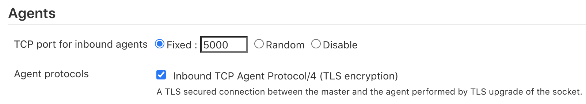</p>
<p>由於預設是使用<code>Random</code>的，但如果你是建立在如: AWS、GCP 之類的雲端服務上，通常會讓<code>Security Group</code>裡<code>Inbound</code>的 Port 越少越好。這裡我們設定<code>Fixed</code>的 Port 號為<code>5000</code>，並且在<code>Security Group</code>開放這個 Port。</p>
<p>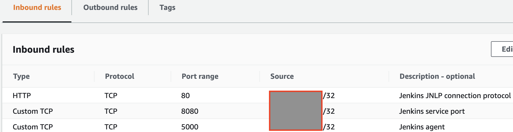</p>
<p>為了只讓特定的機器可以存取這個 Port，也可以在<code>Source</code>上加入目標機器的 IP，這樣就可以有效的增加安全性了。</p>
<h3 id="建立新的節點">建立新的節點</h3>
<p>進入<code>Manage Jenkins</code>並點擊<code>Manage Nodes and Clouds</code></p>
<p>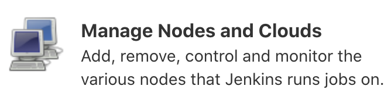</p>
<p>點擊左側<code>New Node</code></p>
<p>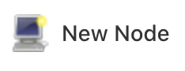</p>
<p>輸入<code>Node name</code>及選擇<code>Permanent Agent</code></p>
<p>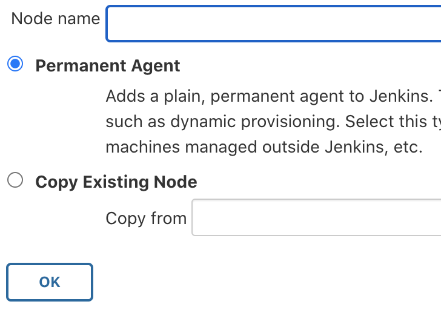</p>
<p>填入必要資訊，如下圖</p>
<p>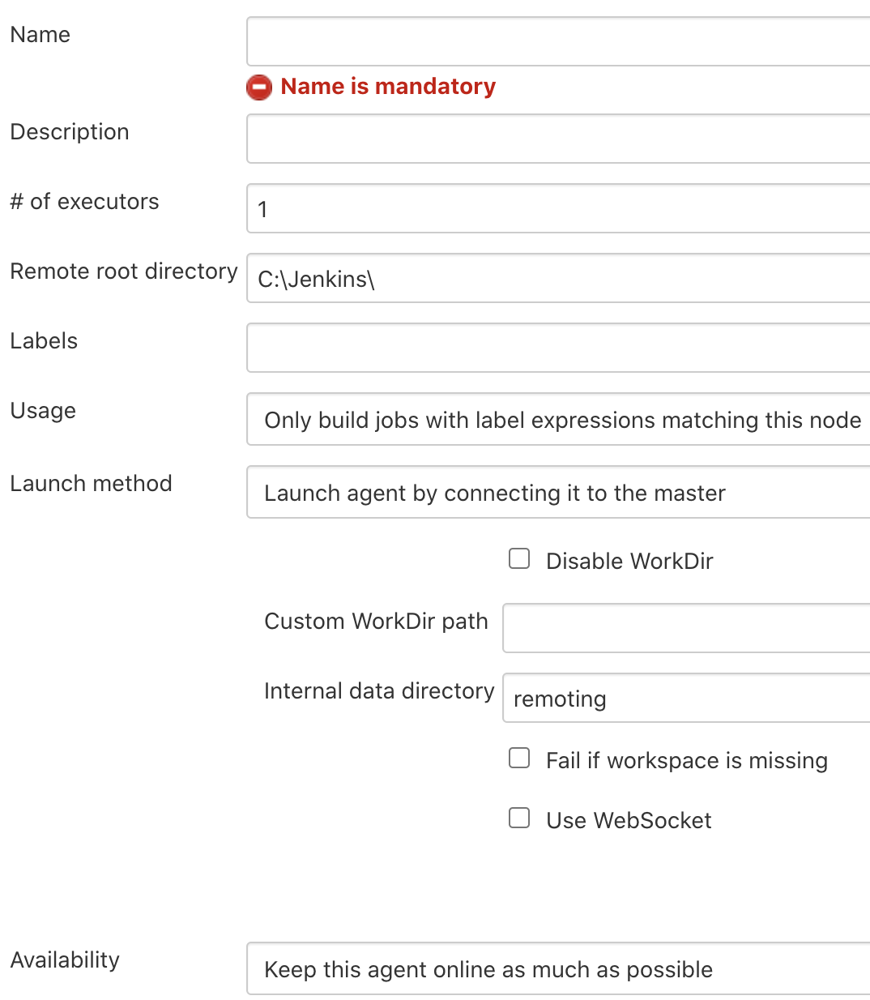</p>
<p>設定 Slave 的工具位置，如: Git&hellip;，完成後點擊<code>Save</code></p>
<p>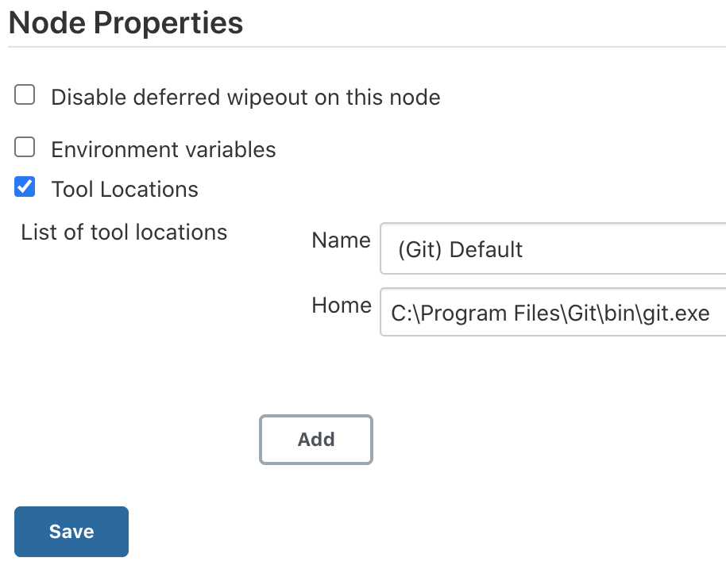</p>
<p>這裡我們會看到一個離線的 Node，請點擊它</p>
<p>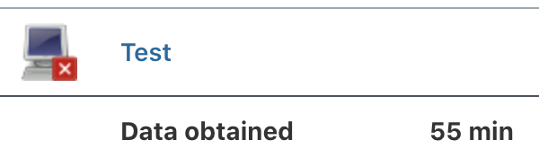</p>
<p>進入後可以看到我們待會需要在 Windows Slave 執行的 Agent 指令</p>
<p>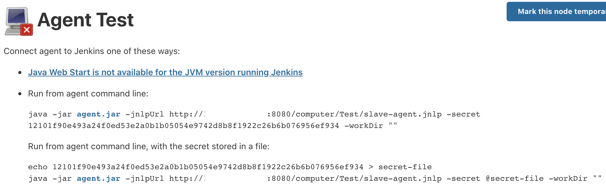</p>
<p>下載<code>agent.jar</code>後到此 Master 的部份完成了，接下來讓我們繼續完成 Windows Slave 的設定吧!</p>
<h2 id="設定-windows-slave">設定 Windows Slave</h2>
<p>接著，我們要在 Windows 上執行剛剛複制下來的指令。我們先將指令寫進腳本檔(powershell 或是 batch)中，方便後續執行。
然後，建立<code>C:\Jenkins</code>並且將<code>jenkins_slave.ps1</code>及<code>agent.jar</code>放進此資料夾。</p>
<p>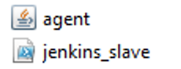</p>
<p>為了避免 Slave 關機或是從開後造成節點失效，我們可以設定<code>Task Scheduler</code>，讓系統在啟動時可以自動運行 Agent。
於設定完後直接執行新建的任務並且回到 Jenkins Master。</p>
<p>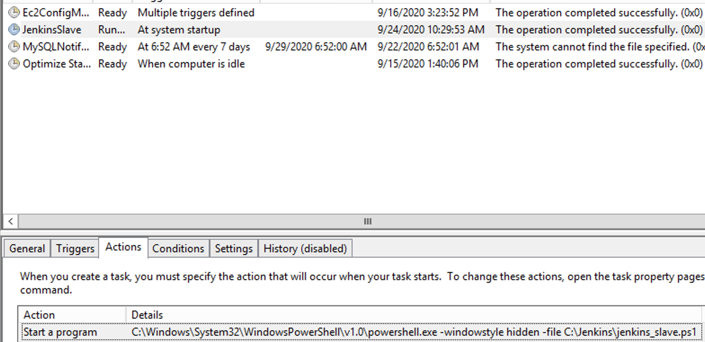</p>
<p>點擊<code>Refresh status</code>後，如果有看到 Slave 的資訊，就代表設定成功了!</p>
<p>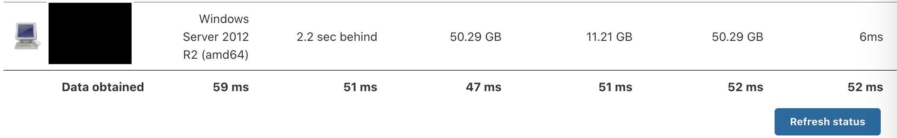</p>
<h2 id="下載-nugetexe">下載 nuget.exe</h2>
<p>根據
<a href="https://docs.microsoft.com/en-us/nuget/consume-packages/package-restore#restore-using-msbuild" target="_blank" rel="noopener">官方文件</a>的說明，Visual Studio 2017 之後的版本已經使用<code>PackageReference</code>的方式來引入相依套件，要下載這些相依套件只需要使用<code>msbuild -t:restore</code>，但如果是之前的專案這些相依套件會被放在<code>packages.config</code>，可參考此
<a href="https://docs.microsoft.com/en-us/nuget/consume-packages/package-restore#restore-using-the-nugetexe-cli" target="_blank" rel="noopener">文件</a>。</p>
<p>因為筆者目前的專案有<code>packages.config</code>，所以會需要<code>nuget.exe</code>這個工具來下載我所需要的相依套件，
可至
<a href="https://www.nuget.org/downloads" target="_blank" rel="noopener">此處</a>下載。</p>
<p>restore 的指令為<code>nuget.exe restore -PackagesDirectory $YOUR_PACKAGES_LOCATION\\packages</code></p>
<p>*NOTE:*如果讀者專案跟我筆者的一樣是混合型的，也別忘了使用<code>dotnet.exe</code>回復紀錄在<code>PackageReference</code>裡面的套件
<code>dotnet restore --packages $YOUR_PACKAGES_LOCATION\\packages</code></p>
<h2 id="troubleshoot">Troubleshoot</h2>
<h3 id="如何利用-cli-的方式建置-net-專案">如何利用 CLI 的方式建置 .Net 專案</h3>
<pre><code class="language-powershell">msbuild.exe $WORKSPACE\\$YOUR_PROJECT\\$YOUR_PROJECT.csproj `
  /p:Platform=AnyCPU `
  /t:WebPublish `
  /p:WebPublishMethod=FileSystem `
  /p:DeleteExistingFiles=True `
  /p:publishUrl=$PUBLISH_DIR\\$YOUR_PROJECT `
  /p:ExcludeFilesFromDeployment=&quot;Web.config&quot; `  # 要排除的檔案
  /p:ExcludeFoldersFromDeployment=&quot;APP&quot;         # 要排除的資料夾
</code></pre>
<h3 id="如何利用-cli-的方式建置-net-core-專案的">如何利用 CLI 的方式建置 .Net Core 專案的</h3>
<pre><code class="language-powershell">msbuild $WORKSPACE\\$YOUR_PROJECT\\$YOUR_PROJECT.csproj `
  /p:Configuration=Release `
  /p:Platform=AnyCPU `
  /p:DeployOnBuild=true `
  /p:ExcludeApp_Data=False `
  /p:SelfContained=False `
  /p:TargetFramework=netcoreapp2.2 `
  /p:TargetRuntime=Portable `
  /p:WebPublishMethod=FileSystem `
  /p:DeleteExistingFiles=True `
  /p:publishUrl=$PUBLISH_DIR\\$YOUR_PROJECT
</code></pre>
<h2 id="總結">總結</h2>
<p>這次的任務就像在玩逆向工程，必需花不少時間在了解整個 .Net 的建置過程及無止境的 Try&amp;Error，過程中也學到了不少關於 .Net 的知識。經過這次的任務，我真的覺得我們這些處在這個時代的工程師，真的是太幸福了。因為， IDE 可能已經在啟重的時候就幫我們做掉了不少底層的事情，讓我們可以不用花心思在程式碼以外的事，讓我體會到 DevOps 的重要性，以及讓我更相信我選擇的道路是正確的!</p>
<h2 id="參考資料">參考資料</h2>
<p><a href="https://stackoverflow.com/questions/16303150/how-can-i-run-a-powershell-script-as-a-background-task-without-displaying-a-wind">https://stackoverflow.com/questions/16303150/how-can-i-run-a-powershell-script-as-a-background-task-without-displaying-a-wind</a>
<a href="https://wiki.jenkins.io/display/JENKINS/Step+by+step+guide+to+set+up+master+and+agent+machines+on+Windows">https://wiki.jenkins.io/display/JENKINS/Step+by+step+guide+to+set+up+master+and+agent+machines+on+Windows</a>
<a href="https://www.edureka.co/community/48364/windows-slave-agent-jnlp-have-jenkins-master-configured-linux">https://www.edureka.co/community/48364/windows-slave-agent-jnlp-have-jenkins-master-configured-linux</a>
<a href="https://scmquest.com/jenkins-windows-slave-configuration-with-screenshots/">https://scmquest.com/jenkins-windows-slave-configuration-with-screenshots/</a>
<a href="https://stackoverflow.com/questions/58931996/jenkins-pipeline-bat-powershell-encoding-show-umlauts">https://stackoverflow.com/questions/58931996/jenkins-pipeline-bat-powershell-encoding-show-umlauts</a>
<a href="https://stackoverflow.com/questions/24291827/how-to-use-a-jenkins-variable-in-my-powershell-script/24292447#24292447">https://stackoverflow.com/questions/24291827/how-to-use-a-jenkins-variable-in-my-powershell-script/24292447#24292447</a>
<a href="https://www.nuget.org/downloads">https://www.nuget.org/downloads</a>
<a href="https://stackoverflow.com/questions/48956184/msbuild-and-package-restore-with-packages-config">https://stackoverflow.com/questions/48956184/msbuild-and-package-restore-with-packages-config</a>
<a href="https://docs.microsoft.com/en-us/nuget/consume-packages/install-use-packages-nuget-cli">https://docs.microsoft.com/en-us/nuget/consume-packages/install-use-packages-nuget-cli</a>
<a href="https://stackoverflow.com/questions/10265869/kill-process-by-filename">https://stackoverflow.com/questions/10265869/kill-process-by-filename</a></p>

    </div>

    


<div class="article-tags">
  
  <a class="badge badge-light" href="/tags/jenkins/">Jenkins</a>
  
  <a class="badge badge-light" href="/tags/visual-studio/">Visual Studio</a>
  
</div>


<div class="share-box" aria-hidden="true">
  <ul class="share">
    
      
      
      
        
      
      
      
      <li>
        <a href="https://twitter.com/intent/tweet?url=https://u2633.github.io/post/2020/09/setup-windows-server-as-a-jenkins-slave/&amp;text=Setup%20Windows%20Server%20as%20a%20Jenkins%20Slave%20and%20Build%20.Net%20Project" target="_blank" rel="noopener" class="share-btn-twitter">
          <i class="fab fa-twitter"></i>
        </a>
      </li>
    
      
      
      
        
      
      
      
      <li>
        <a href="https://www.facebook.com/sharer.php?u=https://u2633.github.io/post/2020/09/setup-windows-server-as-a-jenkins-slave/&amp;t=Setup%20Windows%20Server%20as%20a%20Jenkins%20Slave%20and%20Build%20.Net%20Project" target="_blank" rel="noopener" class="share-btn-facebook">
          <i class="fab fa-facebook"></i>
        </a>
      </li>
    
      
      
      
        
      
      
      
      <li>
        <a href="mailto:?subject=Setup%20Windows%20Server%20as%20a%20Jenkins%20Slave%20and%20Build%20.Net%20Project&amp;body=https://u2633.github.io/post/2020/09/setup-windows-server-as-a-jenkins-slave/" target="_blank" rel="noopener" class="share-btn-email">
          <i class="fas fa-envelope"></i>
        </a>
      </li>
    
      
      
      
        
      
      
      
      <li>
        <a href="https://www.linkedin.com/shareArticle?url=https://u2633.github.io/post/2020/09/setup-windows-server-as-a-jenkins-slave/&amp;title=Setup%20Windows%20Server%20as%20a%20Jenkins%20Slave%20and%20Build%20.Net%20Project" target="_blank" rel="noopener" class="share-btn-linkedin">
          <i class="fab fa-linkedin-in"></i>
        </a>
      </li>
    
  </ul>
</div>


  
    
    


  
  
  
  
  
  <div class="media author-card content-widget-hr">
    

    <div class="media-body">
      <h5 class="card-title"><a href="/authors/zane/"></a></h5>
      
      
      <ul class="network-icon" aria-hidden="true">
  
</ul>

    </div>
  </div>


  


  
  
  <div class="article-widget content-widget-hr">
    <h3>相關</h3>
    <ul>
      
      <li><a href="/post/2020/09/group-permission-with-role-based-on-jenkins/">Group Permission With Role Based on Jenkins</a></li>
      
      <li><a href="/post/2020/09/group-permission-on-jenkins/">Group Permission on Jenkins</a></li>
      
      <li><a href="/post/2020/09/the-right-way-to-run-npm-command-in-container-on-jenkins/">The Right Way to Run Npm Commands in Container on Jenkins</a></li>
      
      <li><a href="/post/2020/09/how-to-run-jenkins-service-on-docker/">How to Run Jenkins Service on Docker</a></li>
      
    </ul>
  </div>
  


  </div>
</article>

      

    
    
    
      <script src="https://cdnjs.cloudflare.com/ajax/libs/jquery/3.4.1/jquery.min.js" integrity="sha256-CSXorXvZcTkaix6Yvo6HppcZGetbYMGWSFlBw8HfCJo=" crossorigin="anonymous"></script>
      <script src="https://cdnjs.cloudflare.com/ajax/libs/jquery.imagesloaded/4.1.4/imagesloaded.pkgd.min.js" integrity="sha256-lqvxZrPLtfffUl2G/e7szqSvPBILGbwmsGE1MKlOi0Q=" crossorigin="anonymous"></script>
      <script src="https://cdnjs.cloudflare.com/ajax/libs/jquery.isotope/3.0.6/isotope.pkgd.min.js" integrity="sha256-CBrpuqrMhXwcLLUd5tvQ4euBHCdh7wGlDfNz8vbu/iI=" crossorigin="anonymous"></script>
      <script src="https://cdnjs.cloudflare.com/ajax/libs/fancybox/3.5.7/jquery.fancybox.min.js" integrity="sha256-yt2kYMy0w8AbtF89WXb2P1rfjcP/HTHLT7097U8Y5b8=" crossorigin="anonymous"></script>

      
        <script src="https://cdnjs.cloudflare.com/ajax/libs/mermaid/8.4.8/mermaid.min.js" integrity="sha256-lyWCDMnMeZiXRi7Zl54sZGKYmgQs4izcT7+tKc+KUBk=" crossorigin="anonymous" title="mermaid"></script>
      

      
        
        <script src="https://cdnjs.cloudflare.com/ajax/libs/highlight.js/9.18.1/highlight.min.js" integrity="sha256-eOgo0OtLL4cdq7RdwRUiGKLX9XsIJ7nGhWEKbohmVAQ=" crossorigin="anonymous"></script>
        
        <script src="https://cdnjs.cloudflare.com/ajax/libs/highlight.js/9.18.1/languages/r.min.js"></script>
        
      

    

    
    
      <script src="https://cdnjs.cloudflare.com/ajax/libs/leaflet/1.5.1/leaflet.js" integrity="sha256-EErZamuLefUnbMBQbsEqu1USa+btR2oIlCpBJbyD4/g=" crossorigin="anonymous"></script>
    

    
    
    <script>const code_highlighting = true;</script>
    

    
    
    <script>const isSiteThemeDark = true;</script>
    

    
    
    
    
    
    
    <script>
      const search_config = {"indexURI":"/index.json","minLength":1,"threshold":0.3};
      const i18n = {"no_results":"找不到结果","placeholder":"搜尋...","results":"搜尋结果"};
      const content_type = {
        'post': "文章",
        'project': "專案",
        'publication' : "出版物",
        'talk' : "演講"
        };
    </script>
    

    
    

    
    
    <script id="search-hit-fuse-template" type="text/x-template">
      <div class="search-hit" id="summary-{{key}}">
      <div class="search-hit-content">
        <div class="search-hit-name">
          <a href="{{relpermalink}}">{{title}}</a>
          <div class="article-metadata search-hit-type">{{type}}</div>
          <p class="search-hit-description">{{snippet}}</p>
        </div>
      </div>
      </div>
    </script>
    

    
    
    <script src="https://cdnjs.cloudflare.com/ajax/libs/fuse.js/3.2.1/fuse.min.js" integrity="sha256-VzgmKYmhsGNNN4Ph1kMW+BjoYJM2jV5i4IlFoeZA9XI=" crossorigin="anonymous"></script>
    <script src="https://cdnjs.cloudflare.com/ajax/libs/mark.js/8.11.1/jquery.mark.min.js" integrity="sha256-4HLtjeVgH0eIB3aZ9mLYF6E8oU5chNdjU6p6rrXpl9U=" crossorigin="anonymous"></script>
    

    
    

    
    

    
    
    
    
    
    
    
    
    
      
    
    
    
    
    <script src="/js/academic.min.c816d323c3a55093dae0829b44ea1ca8.js"></script>

    


  
  
  <div class="container">
    <footer class="site-footer">
  

  <p class="powered-by">
    

    Powered by the
    <a href="https://sourcethemes.com/academic/" target="_blank" rel="noopener">Academic theme</a> for
    <a href="https://gohugo.io" target="_blank" rel="noopener">Hugo</a>.

    
    <span class="float-right" aria-hidden="true">
      <a href="#" class="back-to-top">
        <span class="button_icon">
          <i class="fas fa-chevron-up fa-2x"></i>
        </span>
      </a>
    </span>
    
  </p>
</footer>

  </div>
  

  
<div id="modal" class="modal fade" role="dialog">
  <div class="modal-dialog">
    <div class="modal-content">
      <div class="modal-header">
        <h5 class="modal-title">引用</h5>
        <button type="button" class="close" data-dismiss="modal" aria-label="Close">
          <span aria-hidden="true">&times;</span>
        </button>
      </div>
      <div class="modal-body">
        <pre><code class="tex hljs"></code></pre>
      </div>
      <div class="modal-footer">
        <a class="btn btn-outline-primary my-1 js-copy-cite" href="#" target="_blank">
          <i class="fas fa-copy"></i> 複製
        </a>
        <a class="btn btn-outline-primary my-1 js-download-cite" href="#" target="_blank">
          <i class="fas fa-download"></i> 下載
        </a>
        <div id="modal-error"></div>
      </div>
    </div>
  </div>
</div>

</body>
</html>
